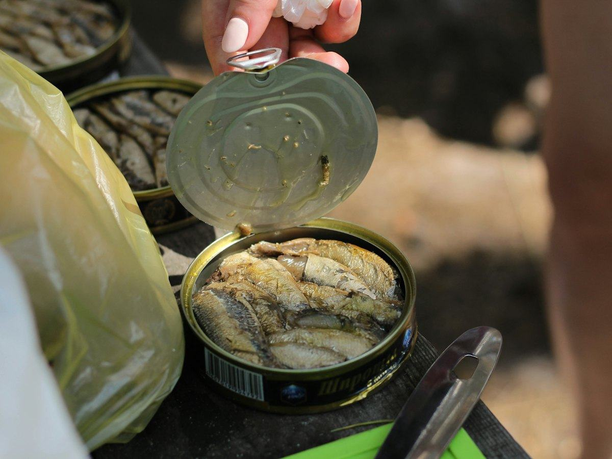
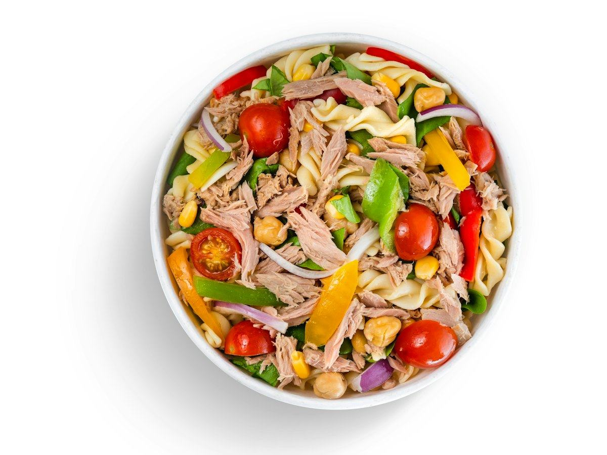
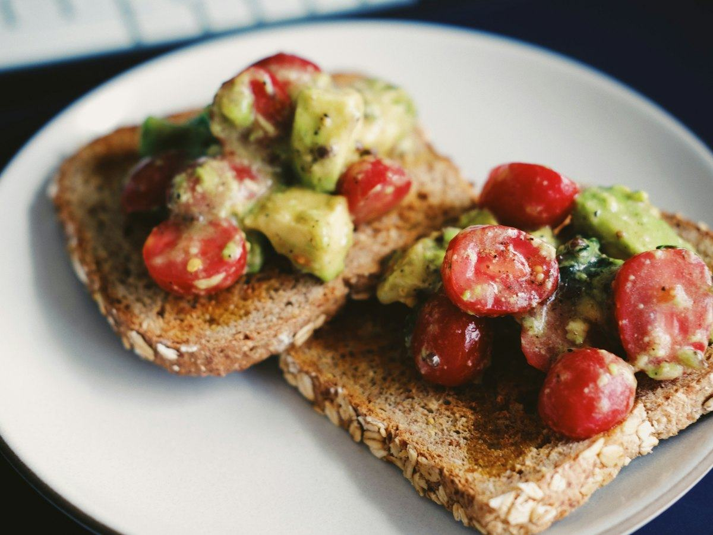
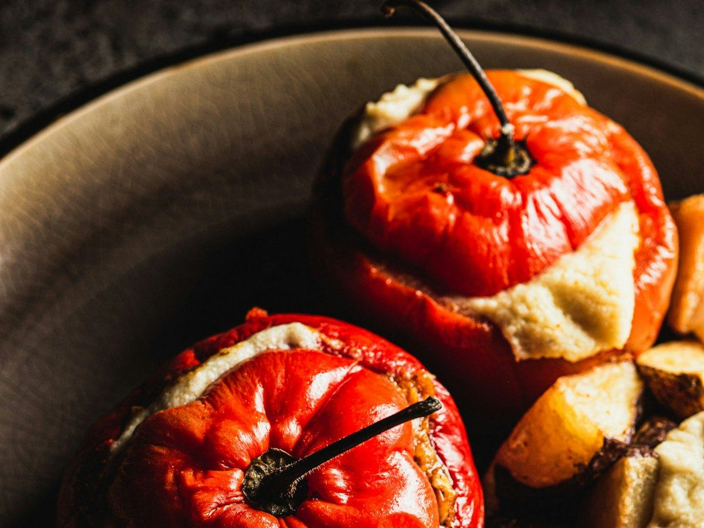

Recetas
3 recetas de salmón fáciles y saludables: al horno, en papillote y en ensalada
Salmón al horno con espárragos, en papillote con verduras y en ensalada con aguacate. Recetas fáciles con calorías, proteínas, hidratos y grasas por ración.
 Por el equipo editorial de Pombo AI
Por el equipo editorial de Pombo AI
12 nov 2026 · 6 min de lectura

Una lata de atún es proteína lista para usar. Estas tres recetas la convierten en una comida completa en pocos minutos.

La ensalada de táper por excelencia, en versión integral.
| Proteínas | 31 g | 29 % |
|---|---|---|
| Hidratos de carbono | 55 g | 52 % |
| Grasas | 9 g | 19 % |
| Fibra | 8 g |
El % indica de dónde viene la energía del plato.
Equilibrada: hidratos de la pasta integral y mucha proteína del atún al natural, con poca grasa.

Desayuno, merienda o cena rápida con proteína y grasas saludables.
| Proteínas | 31 g | 34 % |
|---|---|---|
| Hidratos de carbono | 36 g | 40 % |
| Grasas | 11 g | 26 % |
| Fibra | 8 g |
El % indica de dónde viene la energía del plato.
Mucha proteína del atún, hidratos y fibra del pan integral y grasa del aguacate. Saciante y lista en cinco minutos.

Un entrante clásico de verano. Usamos yogur griego en lugar de mayonesa para aligerarlo.
| Proteínas | 33 g | 52 % |
|---|---|---|
| Hidratos de carbono | 15 g | 24 % |
| Grasas | 7 g | 24 % |
| Fibra | 4 g |
El % indica de dónde viene la energía del plato.
Mucha proteína y pocos hidratos, con muy pocas calorías. Ideal como cena ligera o primer plato.
Cómo calculamos los valores: sumamos los ingredientes con la base pública del USDA (FoodData Central, SR Legacy) y dividimos entre las raciones. Son aproximaciones: cambian según la marca, el tamaño y la cocción. Los sellos "fuente de" y "alta en" siguen los criterios del Reglamento (CE) 1924/2006. Para saber lo que comes de verdad, haz una foto a tu plato con Pombo AI.
La AESAN recomienda que embarazadas, mujeres en lactancia y niños menores de 10 años eviten el atún rojo, el pez espada, el tiburón y el lucio. Las conservas de atún no se hacen con atún rojo, así que entran dentro de las 3 o 4 raciones semanales de pescado de contenido bajo o medio. Más detalles en beneficios del pescado.
¿Cuánto comes de verdad?
Con Pombo AI haces una foto a tu plato y la inteligencia artificial estima calorías, proteínas, hidratos y grasas en segundos. Es una estimación orientativa, no un dato médico.
Las conservas de atún no se hacen con atún rojo, la especie con más mercurio, por lo que según Consumer también los niños pueden tomarlas dentro de las 3 o 4 raciones semanales de pescado.
El atún al natural tiene muy poca grasa. Si lo compras en aceite, escúrrelo bien: la mayor parte de la grasa extra está en el aceite de la lata.
Aviso: Este artículo es informativo y no sustituye el consejo de un médico o dietista-nutricionista. Si tienes una enfermedad, tomas medicación, estás embarazada o has tenido un trastorno de la conducta alimentaria, consulta con un profesional antes de cambiar tu alimentación.
Salmón al horno con espárragos, en papillote con verduras y en ensalada con aguacate. Recetas fáciles con calorías, proteínas, hidratos y grasas por ración.
Merluza a la gallega, al horno con pimientos y a la plancha con verduras. Tres recetas de pescado blanco con su información nutricional.
Tosta de sardinas, ensalada de patata con sardinas y pasta integral con sardinas en tomate. Recetas con pescado azul y su información nutricional.